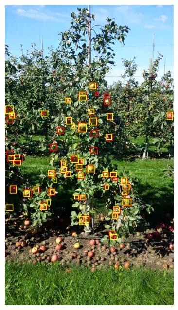
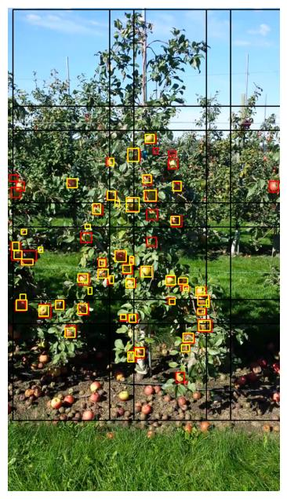

果园苹果检测与计数
在真实果园图像中检测并统计苹果。针对小目标、遮挡和密集分布，团队将树区域提取、重叠切片检测和检测框去重连接成完整流程，并在另一个果园数据集上检验表现。
基线：YOLOv8 直接检测

集成：ROI + 切片 + 去重

个人贡献
主要负责 YOLOv8 苹果检测与计数模块及结果评估与分析；与负责树检测、滑动窗口和 NMS 的组员完成模块对接。
- 转换原始 bounding-box 标注为 YOLO 格式，组织训练、验证与测试数据。
- 训练单类别苹果检测器，使用独立测试数据进行推理与结果分析。
- 对接 320 × 320 像素重叠切片、原图坐标恢复及跨切片去重流程。
- 比较基线与完整方案，分析误检、漏检及跨数据集表现。
检测结果 (F1)
| 测试数据 | 基线 | 集成方案 |
|---|---|---|
| MinneApple | 0.7315 | 0.7643 |
| Monastery Apple | 0.6438 | 0.7349 |
F1 综合 Precision 与 Recall，用于评价检测质量，不表示最终计数误差。 集成方案在两个测试集上均高于基线，说明树 ROI、重叠切片与去重流程 在本项目设置下改善了检测表现。
技术细节与局限
- 树 ROI
- 重叠切片
- YOLOv8 检测
- 坐标恢复
- NMS / IoM 去重
- 苹果计数
评估与数据检查
评估前移除与验证集重复的 3 张测试图像，避免数据泄漏； MinneApple 上完整方案 Precision 为 0.8329、Recall 为 0.7061； 基线与集成方案使用相同测试集和评价口径进行比较。
仍然存在的限制
树 ROI 不完整会在检测前排除部分苹果；重叠切片增加推理工作量。跨数据集结果说明了这一测试集上的改善，但不足以证明在所有果园环境中都能稳定泛化。